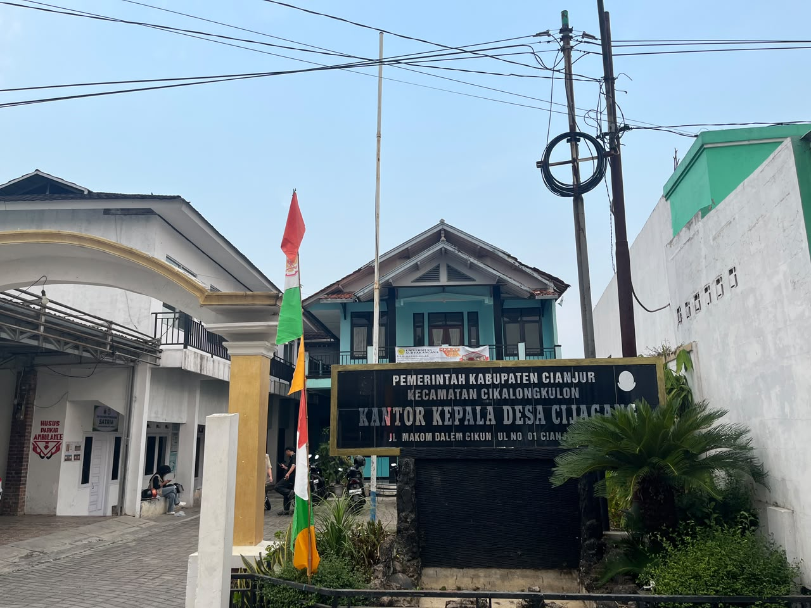

Sejarah, visi misi, struktur pemerintahan, dan potensi unggulan Desa Cijagang.

Desa Cijagang terletak di Kabupaten Pandeglang, Provinsi Banten. Awalnya desa ini berkembang dari permukiman agraris yang tumbuh dari kekayaan alam, pertanian, dan keharmonisan antarwarga. Seiring waktu, Desa Cijagang berhasil mempertahankan budaya lokal dan semakin berkembang melalui berbagai program pemberdayaan masyarakat.
Dalam perkembangannya, Desa Cijagang menjadi pusat kegiatan ekonomi lokal, pendidikan, dan pelayanan publik yang berusaha menjawab kebutuhan warganya dengan cara yang transparan, partisipatif, dan berkelanjutan.
Desa Cijagang berada di Kecamatan Sindangresmi, Kabupaten Pandeglang, dengan akses jalan desa yang terus ditingkatkan.
Desa ini memiliki masyarakat yang ramah dan guyub, dengan kekuatan utama di sektor pertanian, UMKM, dan pariwisata desa.
Potensi desa meliputi pertanian, perkebunan, perikanan, wisata alam, serta produk khas oleh-oleh.
"Terwujudnya Desa Cijagang yang Maju, Mandiri, Sejahtera, dan Berbudaya."